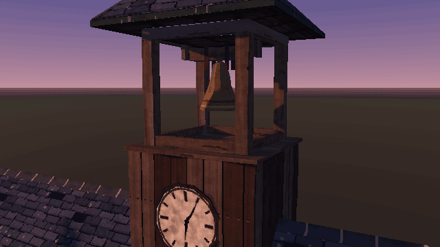

Tutorials › Ring a Bell That Swings in Its Turret
How to Ring a Bell That Swings in Its Turret in Godot 4
A bell that swings in steps on its headstock, the clapper striking at the top of every swing, your own sound on each stroke, then down to rest.

A bell that rings in a horror game should swing, not just play a sound. One script swings any bell on its headstock in the stepped motion of PS1 games: its swing grows over the first pull, the clapper strikes at the top of every swing (a signal, and your own sound if you give it one), and when its strokes are rung it swings down to rest. It can ring itself when the player walks near.
Script: ring_the_bell.gd (MIT) · Godot 4.3 or newer · its folder on GitHub
How to use it
- Put the bell's mesh under a
Node3Dwhose X axis is the headstock (turning it about X swings the bell), add a parentNode3Dand attachring_the_bell.gdto it; setpivotto the headstock node. - Call
ring(n)for n strokes, orring()to ring untilstop(). Connectstruckfor anything that should happen at a stroke, or setsoundto anAudioStreamPlayer3D: it plays at every stroke. - Set
swing_deg,periodandsteps(poses a second; 0 for a smooth swing). Give it anArea3Dasring_when_nearand it ringsstrokes_when_nearstrokes when a body walks in.
What it needs
- Godot 4.3 or newer (the Compatibility renderer is enough).
- A bell under a node that turns about its X axis; a sound of your own if you want one.
Try it free
The code works on any bell mesh of yours; the free sampler has no bell (Cordatix PSX Horror Village's hall carries one in its turret).
How it was tested
In Godot 4.3 and 4.7.2, with a stand-in bell in any project: ring(3) strikes three times at the tops of its swings, plays the sound each time and comes to rest; the swing stays within its degrees and changes pose in steps; ring() rings until stop() and then strikes no more; a body walking into the area rings it once, not again while it rings. In the pack's own project the hall's bell swings and strikes with it as well.
The code
extends Node3D
## How to Ring a Bell That Swings in Its Turret in Godot 4
## Cordatix Godot 4 PSX tutorials, MIT licensed: https://github.com/GoldenSparrow-Dev/cordatix-godot-psx-tutorials
## Written for: https://cordatix.itch.io/cordatix-psx-horror-village
## Rings a bell that swings in its turret, the way the PS1 moved things: in steps. Put it on any Node3D whose child
## (pivot) turns about its X axis: the bell hangs under that axis. ring() swings it, the swing growing to its full
## height, and every time it reaches the top of a swing the clapper strikes: `struck` fires and, if you gave it one, a
## sound plays. Stop it and it swings down to rest. From the tutorial "How to Ring a Bell That Swings in Its Turret in
## Godot 4" (Cordatix). MIT licence.
signal struck(stroke: int)
@export var pivot: Node3D ## what swings: the bell and its headstock, its axis along its X
@export var sound: Node ## optional: an AudioStreamPlayer3D, played at every stroke
@export var swing_deg := 35.0 ## how far it swings either way, at full height
@export var period := 1.4 ## seconds from one side to the other
@export var steps := 15.0 ## poses a second (the PS1's stepped motion); 0 for a smooth swing
@export var ring_when_near: Area3D ## optional: rings once when a body enters this area
@export var strokes_when_near := 6
var _t := -1.0 # seconds since the ring began; below zero: at rest
var _amp := 0.0 # the swing's height now, in radians
var _left := 0 # strokes still to ring (0 and ringing: until stop())
var _forever := false
var _stroke := 0
var _last_side := 0.0
var _hold := 0.0 # time since the last pose was shown
func _ready() -> void:
if ring_when_near:
ring_when_near.body_entered.connect(func(_body: Node3D) -> void:
if not is_ringing():
ring(strokes_when_near))
## Rings n strokes (each a swing to one side, the clapper striking at its top); n = 0 rings until stop().
func ring(n: int = 0) -> void:
_left = n
_forever = n <= 0
_t = 0.0
_stroke = 0
_last_side = 0.0
## Lets the bell swing down to rest: it strikes no more.
func stop() -> void:
_forever = false
_left = _stroke
func is_ringing() -> bool:
return _t >= 0.0
## The swing: the bell's angle follows a sine of the time, its height growing over the first swing and, once its
## strokes are rung, shrinking until it hangs still. The top of a swing is where the sine's slope changes sign.
func _process(delta: float) -> void:
if pivot == null or _t < 0.0:
return
_t += delta
var full := deg_to_rad(swing_deg)
var done := not _forever and _stroke >= _left
if done:
_amp = maxf(0.0, _amp - full * delta / period) # it dies down over about one swing
else:
_amp = minf(full, full * _t / period) # it swings up to full in one swing
var phase := _t / period * PI
var side := signf(cos(phase))
if _last_side != 0.0 and side != _last_side and not done:
_stroke += 1
struck.emit(_stroke)
if sound and sound.has_method("play"):
sound.call("play")
_last_side = side
if done and _amp <= 0.0:
_t = -1.0
pivot.rotation.x = 0.0
return
# the pose changes only `steps` times a second: in between the bell holds still, then jumps
if steps > 0.0:
_hold += delta
if _hold < 1.0 / steps:
return
_hold = fmod(_hold, 1.0 / steps)
pivot.rotation.x = sin(phase) * _amp
The devlog and the pack
The step-by-step walkthrough comes as a devlog on itch.io on 23 November 2026; this page is the tutorial until then. It is written for Cordatix PSX Horror Village, a PS1-style asset pack by Cordatix for Godot 4, Unity, Unreal and Blender.